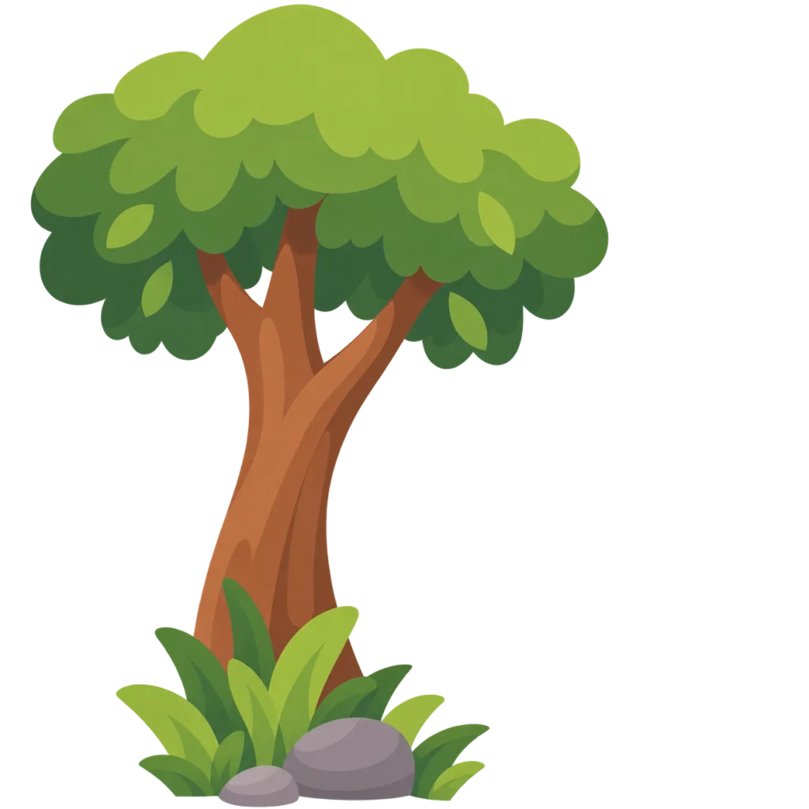
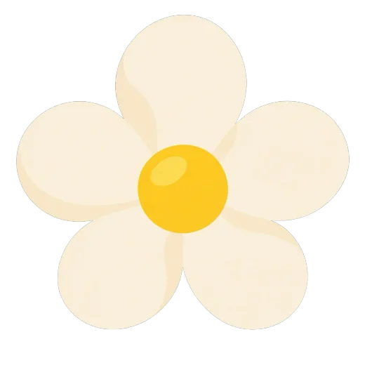
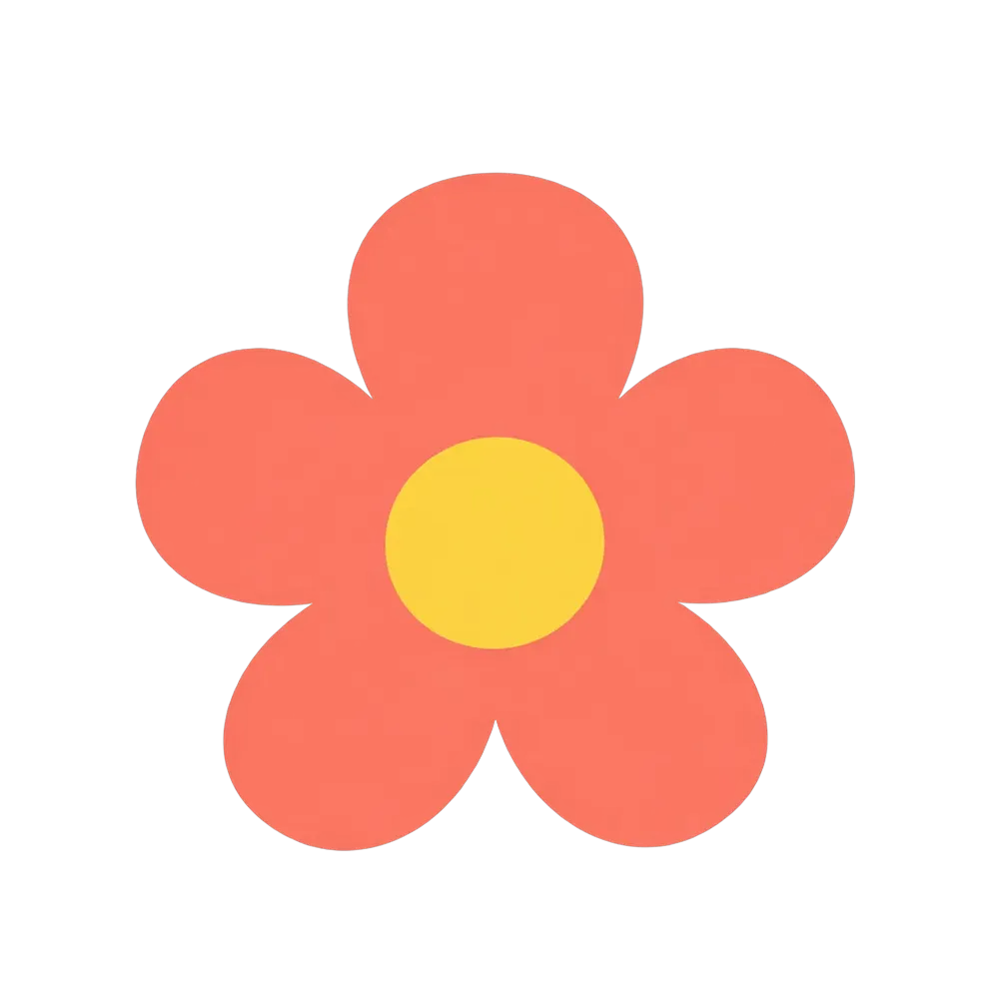
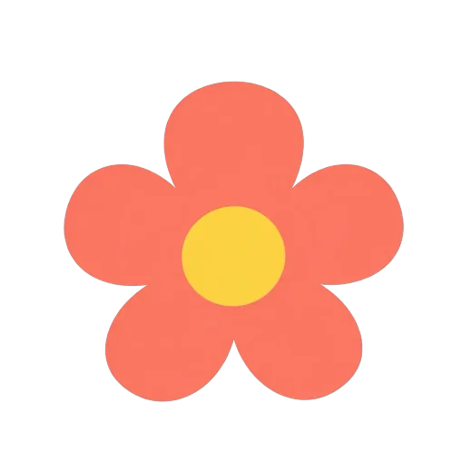

Total 325 KB → 168 KB. Images are shown at their 1024-stage CSS display width (zoom panes at 3×). Flagged first. Open this file from docs/ inside the repo (images load by relative path).
77 KB → 33 KB (1000×1000 → 540×540) · SSIM 0.9845 · PSNR 36.9 dB · edge 11.3 FLAGGED: PSNR 36.9, edge 11.3
Zoom 3× (top-left detail):
95 KB → 63 KB (1254×1254 → 1020×1020) · SSIM 0.9906 · PSNR 45.2 dB · edge 1.4 passes gate

Zoom 3× (top-left detail):
83 KB → 42 KB (1254×1254 → 850×850) · SSIM 0.9955 · PSNR 46.3 dB · edge 1.8 passes gate
Zoom 3× (top-left detail):
42 KB → 16 KB (1183×1183 → 520×520) · SSIM 0.9860 · PSNR 40.5 dB · edge 1.4 passes gate


Zoom 3× (top-left detail):
28 KB → 14 KB (1001×1001 → 520×520) · SSIM 0.9941 · PSNR 44.1 dB · edge 1.1 passes gate


Zoom 3× (top-left detail):